Sumber .mmd yang sama, dirender dengan mermaid.js 12.2.0 dan flowmaid 0.40.2. Laporan pertama (30 Oktober, flowmaid 0.32) menyimpulkan bahwa flowmaid kalah di komposisi: bentuk edge, back-edge, kepala panah, dan layout cluster. Sepuluh rilis kemudian, halaman ini memeriksa ulang setiap temuan itu pada gambar hari ini.
25 diagramlebih baik 20 · setara 0 · campur 5 · masih kalah 0isu 30 Okt: 88 beres · 11 sebagian · 8 masih ada (dari 107)commit c202cfc (0.40.2)
Lima alasan terbesar, sekarang
Lima penyebab utama dari laporan 30 Oktober. Statusnya diperiksa di CHANGELOG dan di gambar 0.40.2.
Tiga gaya edge dalam satu gambarberes0.34.0 + 0.38.0
Semua edge flowchart dan state kini orthogonal dengan sudut membulat; S-cubic dan spline sudah hilang dari korpus.Temuan 30 OktEdge antar-rank bersebelahan jadi cubic S, edge panjang jadi B-spline, dan hanya edge yang diperbaiki router yang orthogonal. Mermaid 12.2 (ELK) membuat semua edge orthogonal dengan sudut membulat. Terlihat di sekitar 14 diagram.
Back-edge digambar sebagai satu lengkungan lebarberes0.34.0
Back-edge kini lane orthogonal di samping gambar, masuk tegak lurus; laso dan loop V hilang, kanvas mengecil.Temuan 30 OktHasilnya bentuk laso dan loop V yang menggantung. Panah masuk pada sudut sekitar 14° dan setengahnya tertutup node. Kanvas jadi membengkak. Terlihat di sekitar 11 diagram (scene.rs:3347-3370).
Kepala panah tidak konsistenberes0.34.0
Satu ukuran kepala 11 px termasuk ==>, ujung tepat di border dan tegak lurus. Sisa kecil: satu panah miring 30°.Temuan 30 OktPada ==> kepalanya 2× ukuran normal (scene.rs:2494). Glyph-nya sempit dan stroke menyembul melewati ujung. Segmen terakhir tidak tegak lurus terhadap sisi node.
Struktur layout salah pada diagram ber-cluster dan diagram padatsebagian0.34.0 + 0.35.0 + 0.36.0 + 0.37.0
Subgraph bersarang dan direction beres. dense-lr masih portrait, crossing masih lebih banyak dari mermaid; subgraph sebagai blok sedang dikerjakan.Temuan 30 OktSubgraph bersarang hilang dan direction di subgraph diabaikan. Node tanpa edge diparkir di rank 0. Akibatnya diagram LR berubah portrait, dan crossing-nya 1,6–4× lebih banyak dari mermaid.
Informasi hilang atau artinya salahberes0.33.0 + 0.34.0
Note state dan class, «interface», dan komentar ER kini tampil; lingkaran zero terlihat; parent class di atas anaknya.Temuan 30 OktNote di state dan class, «interface», dan komentar ER tidak ikut dirender. Chip label ER menutupi lingkaran "zero", jadi o{ terbaca |{. Hierarki class terbalik.
Bug kebenaran
Sepuluh bug yang membuat gambar salah atau kehilangan informasi. 10 dari 10 sudah beres.
#
Bug (30 Okt)
Diagram
Status
Sekarang
1
Subgraph bersarang "Async Workers" tidak digambar
advanced
beres
0.34.0
Async Workers kini digambar sebagai frame bersarang di dalam Production Platform.
2
Edge ke subgraph (Reg --> Platform) tidak memengaruhi ranking, sehingga CI berada di samping Platform
advanced
beres
0.34.0
CI kini di atas Platform, dan Reg --> Platform turun lurus ke sisi atas frame.
3
Dev --> CI digambar sebagai panah ke atas yang berhenti di border frame
advanced
beres
0.34.0
Dev --> CI kini digambar lurus ke bawah dari Dev ke Build, node pertama di CI.
4
Chip label menutupi lingkaran "zero", jadi kardinalitas terbaca salah
er
beres
0.33.0
Label kini diletakkan di luar glyph, jadi lingkaran zero pada o{ terlihat jelas.
5
Hierarki terbalik: parent dan interface digambar di bawah anak
class
beres
0.34.0
Relasi kini disusun sesuai urutan sumber: Person di atas Customer, PaymentMethod di atas CreditCard dan PayPal.
6
Edge hasil reroute digambar lurus menembus kotak, dan segitiga inheritance hilang
class
beres
0.34.0
Edge class kini orthogonal dan digambar mengikuti rutenya; segitiga inheritance tampil utuh.
7
Note, «interface», dan komentar atribut dibuang tanpa peringatan
state, class, er
beres
0.33.0 + 0.34.0
Note class dan state, «interface», serta komentar atribut ER kini dirender.
8
Ujung edge melayang 7–10px dari sisi miring parallelogram/hexagon
shapes, advanced
beres
0.34.0
Ujung edge kini tepat di outline asli, termasuk sisi miring parallelogram dan titik hexagon.
9
direction LR di subgraph atau composite state diabaikan
state, flowchart
beres
0.37.0
Composite Validating dengan direction LR kini satu baris. Tiga poin kecil masih tercatat di roadmap.
10
Edge architecture tersembunyi di belakang node lain atau menembus kotak
architecture
beres
0.33.0
Edge architecture kini terlihat semua, mengikuti port yang ditulis, dan tidak menembus kotak service.
Sedang dikerjakan: subgraph sebagai blok
Diagram dengan banyak subgraph yang saling terhubung masih kalah rapi dari mermaid. Layout baru membuat setiap subgraph jadi satu blok padat: blok yang terhubung ditumpuk searah alur, edge berjalan di celah antar-blok, dan label punya ruang sendiri. Layout ini sudah ada di kode, tetapi masih dimatikan sampai lolos perbandingan dengan mermaid.
mermaid.js 12.2.0
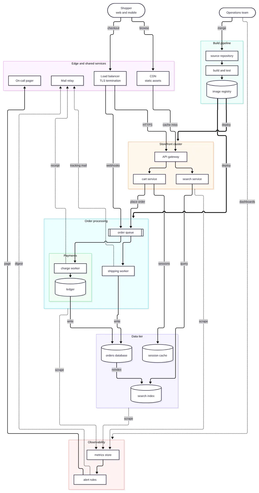
flowmaid 0.40.2 (sekarang)
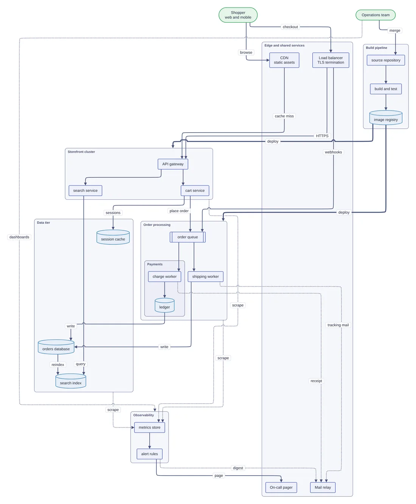
mode blok (belum dirilis)
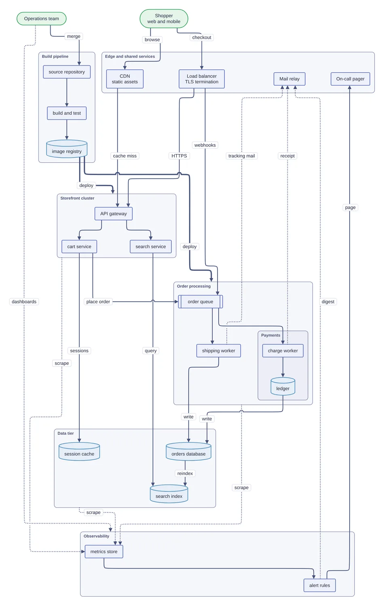
Input: tests/fixtures/blocks/blocks-overview.mmd. Gambar mode blok diambil dari branch kerja (commit b82d584), tanpa drag.
Langkah
Isi
Status
1
Struktur: pohon blok, layering, urutan
masuk 0.40.1 dimatikan
2
Geometri: frame, koordinat, ruang untuk celah dan label. Bagian kedua (frame lebih rapat, rantai tetap lurus) belum mencapai target setelah dua putaran kerja.
sebagian bagian pertama masuk 0.40.2
3
Routing saat drag: route() menggambar sama dengan layout statis, drag hanya menggambar ulang yang bergerak.
lolos review di branch kerja
4
Koridor untuk edge yang digambar ulang, perbandingan penuh dengan mermaid, lalu jadi default
belum mulai
Diagram uji padat (dense-td): mode blok menggambar 42 crossing, layout sekarang 66 (statis) dan 76 (setelah route()).
Galeri per diagram
Mermaid di kiri, flowmaid 0.40.2 di kanan, dari input yang identik. Chip menunjukkan penilaian 0.40.2 terhadap mermaid. Di bawahnya, isu dari laporan 30 Oktober dengan statusnya sekarang. Gambar 0.32 ada di bagian yang bisa dibuka.
demo.mmd
lebih baik
Lebih rapi dari mermaid, sisa kecil di posisi chip yes/no
mermaid.js 12.2.0
flowmaid 0.40.2
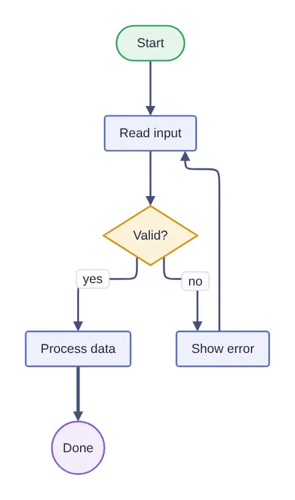
Isu 30 Okt, sekarang
beresLoop E→B berbentuk lasso, panah 14° setengah tertutupE→B kini jalur siku di kanan (x=239), kepala utuh masuk tegak ke sisi bawah Read input.
bereskepala ==> 2×Satu ukuran kepala 11px untuk semua edge; D→F tebal 3.5px, kepalanya sama.
beresrank berlabel sempit sehingga yes/no jadi kaitGap rank berlabel 72px (dulu 60). yes/no kini siku turun-samping-turun, tanpa kait.
Masih terlihat di 0.40.2
Chip yes/no menutupi tikungan; mermaid menaruh label di segmen tegak
Chip yes/no tidak simetris: beda tinggi 2.4px, garis yes di tepi chip
Flowmaid lebih baik
Diamond 102×65 vs 171×171, kanvas 321×544 vs 360×615, jalur no tanpa tangga (mermaid 18px), label berupa chip berbingkai.
Lihat gambar 0.32 (30 Okt) · penilaian waktu itu: Lebih bersih dari mermaid, kecuali back-edge dan kepala thick
advanced.mmd
lebih baik
Struktur kini benar dan lebih rapi dari mermaid
mermaid.js 12.2.0
flowmaid 0.40.2
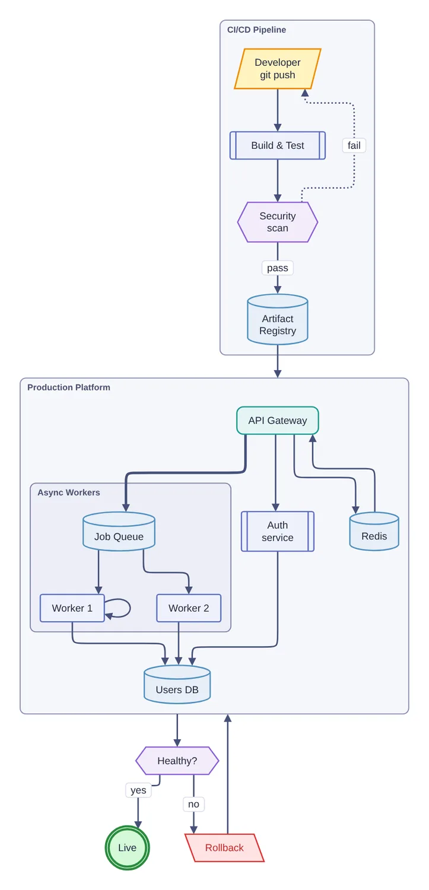
Isu 30 Okt, sekarang
beresAsync Workers hilangFrame Async Workers ada (Job Queue, Worker 1, Worker 2), isinya lebih gelap dari Platform.
beresedge ke Platform tidak memengaruhi rankingCI/CD Pipeline kini di atas Production Platform; Reg→Platform lurus 46px ke tepi frame.
beresDev→CI stub ke atasTidak ada stub lagi; Dev→CI digambar lurus 60px ke Build & Test sebagai wakil frame.
beres'fail' dan Cache→Gate keluar framefail (x≤508) di dalam CI/CD (tepi 520); Cache→Gate (x≤521) di dalam Platform (tepi 568).
bereskepala thick 2×Gate==>Q tebal 3.5px dengan kepala 11px, sama dengan edge lain.
Masih terlihat di 0.40.2
Chip yes di tikungan dan 20px lebih tinggi dari chip no
Panah yes masuk Live 15px dari tengah lingkaran
Q→W1 masuk Worker 1 36px dari tengah, 8px dari sudut kanan
Panah no masuk Rollback 12px dari sudut kirinya
Flowmaid lebih baik
Self-loop W1 utuh (mermaid rusak), Rollback→Platform lurus 167px (mermaid memutar sisi kanan), judul Async Workers tidak dicoret, kanvas 596×1236 vs 906×1484.
Lihat gambar 0.32 (30 Okt) · penilaian waktu itu: Bentuknya bagus, strukturnya salah
subgraph.mmd
lebih baik
Ritme dan spine kini rapi, lebih bersih dari mermaid
mermaid.js 12.2.0
flowmaid 0.40.2
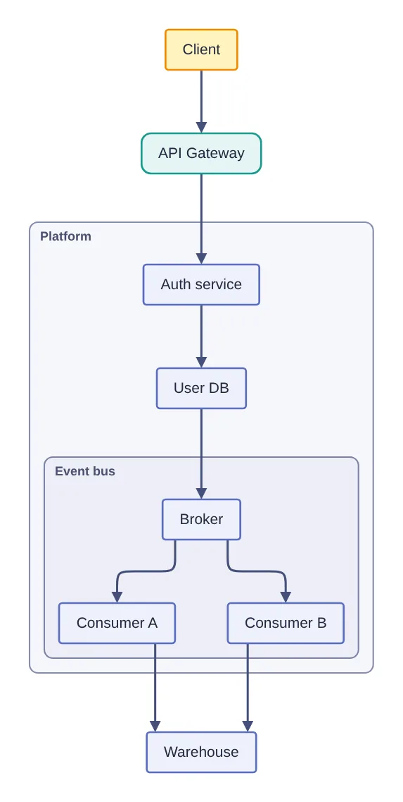
Isu 30 Okt, sekarang
beresRuang mati 26px di bawah baris pertama clusterAuth→User DB kini 60px (dulu 86px), sama dengan gap lain di dalam frame.
beresspine tidak rataSemua node spine di x=190.9; gap 60px di dalam frame, 84-86px saat melewati tepi frame.
beresnested tidak terbedakanEvent bus kini isi #eceef6 dengan garis lebih gelap, Platform #f6f7fb. Terlihat, walau halus.
beresfan-out off-centreBroker→Consumer A/B simetris: keluar ±24.8px, masuk tepat di tengah tiap consumer.
Masih terlihat di 0.40.2
Consumer→Warehouse keluar 36px dari tengah, masuk 8px dari sudut Warehouse
Beda warna frame luar dan dalam masih halus dibanding mermaid
Flowmaid lebih baik
Judul frame tidak dicoret (mermaid mencoret Platform dan Event bus), gap dalam frame rata 60px (mermaid 24 dan 60), lebar 382 vs 466.
Lihat gambar 0.32 (30 Okt) · penilaian waktu itu: Benar secara semantik; kalah ritme dan ukuran
lr.mmd
lebih baik
V-loop hilang, kini lebih ringkas dan rapi dari mermaid
mermaid.js 12.2.0
flowmaid 0.40.2
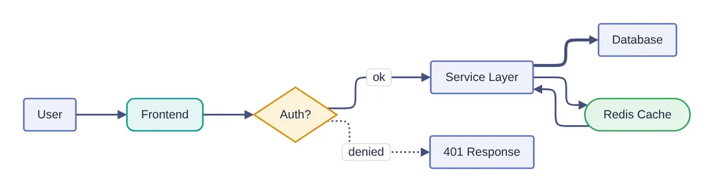
Isu 30 Okt, sekarang
beresV-loop CACHE→SVC (+73px)CACHE→SVC kini siku pendek bersarang dengan SVC→CACHE, tanpa crossing. Tinggi kanvas 226 (dulu 299), sama dengan mermaid.
bereskepala thick 2×SVC==>DB memakai kepala 11px yang sama dengan edge lain.
beres'denied' menempel di 401Chip denied berakhir di x=458.7, 401 Response mulai di x=505.5: jarak 47px.
bereskipas keputusan asimetris (dup BK)SVC dan 401 Response ±44px dari sumbu Auth?, garis keluar ±7.5px. Yang beda hanya chip dan tikungan (7px).
Masih terlihat di 0.40.2
Chip denied menutupi tikungan, chip ok di segmen lurus, jadi tidak sejajar
Garis tebal ke Database keluar 5px dari sudut atas Service Layer
Flowmaid lebih baik
Lebar 839 vs 1074 dengan tinggi sama 226, diamond 98×65 vs 171×171, label berupa chip berbingkai, warna per jenis node.
Lihat gambar 0.32 (30 Okt) · penilaian waktu itu: Satu V-loop membuatnya tampak rusak
shapes.mmd
lebih baik
Semua ujung tepat di border, tinggal kontras garis yang kalah
mermaid.js 12.2.0
flowmaid 0.40.2
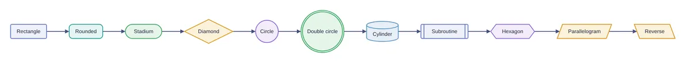
Isu 30 Okt, sekarang
beresUjung edge melayang di sisi miringUjung panah tepat di sisi miring: I→J di x=1479.9, J→K di x=1683.7, pas dengan garis polygon.
bereslabel cylinder terlalu tinggi dan tutupnya kosongLabel di y=92.2, di badan di bawah tutup (77.8-111.8); tutup kini elips penuh ry 10.
sebagianstroke tipis berkontras rendahGaris node 1.8px (dulu 1.6), warna sama: oranye 2.35:1 dan hijau 2.84:1 terhadap isi.
Masih terlihat di 0.40.2
Garis oranye 2.35:1 dan hijau 2.84:1 terhadap isi, di bawah 3:1
Flowmaid lebih baik
Lebih ringkas: lebar 1813 vs 2157, diamond 128×65 vs 171×171, hexagon 116×38 vs 204×91; warna per kelompok shape.
Lihat gambar 0.32 (30 Okt) · penilaian waktu itu: Paling dekat ke mermaid
stress.mmd
lebih baik
Nol crossing dan self-loop jelas; chip 'parallel' menempel edge thick
mermaid.js 12.2.0
flowmaid 0.40.2
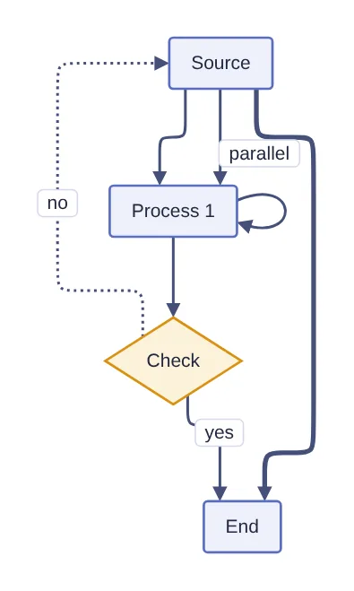
Isu 30 Okt, sekarang
beresThick menembus self-loopThick turun di x=233, sekitar 21px di kanan self-loop; tidak bersentuhan.
beres'parallel' di edge yang salahChip kini di samping edge lurus 'A → B: parallel' (x=164).
beresback-edge menyilang thick'no' lewat lane kiri, thick lewat kanan; 0 crossing di seluruh diagram.
beresapex diamond penuhHanya B→C di apex atas; 'no' keluar dari sisi kiri atas, 'yes' dari sisi kanan bawah.
sebagianS-wobbleLengkung S hilang. Masih ada jog siku di A→B, 'yes' dan thick; mermaid juga punya jog serupa.
Masih terlihat di 0.40.2
Chip 'parallel' menempel di bawah belokan thick, jarak kurang dari 1px.
'no' memutar lewat lane kiri; labelnya 75px di atas Check.
Chip 'yes' menutupi jog; garis masuk dari kiri, keluar dari bawah.
Flowmaid lebih baik
Self-loop bulat yang jelas (mermaid hanya stub kecil), diamond 101×65 vs 171×171, area 31% lebih kecil.
Lihat gambar 0.32 (30 Okt) · penilaian waktu itu: Elemen bagus, edge berebut satu strip 65px
fanout.mmd
lebih baik
Spine lurus, 0 crossing, loop-back 'no' lewat lane kanan
mermaid.js 12.2.0
flowmaid 0.40.2
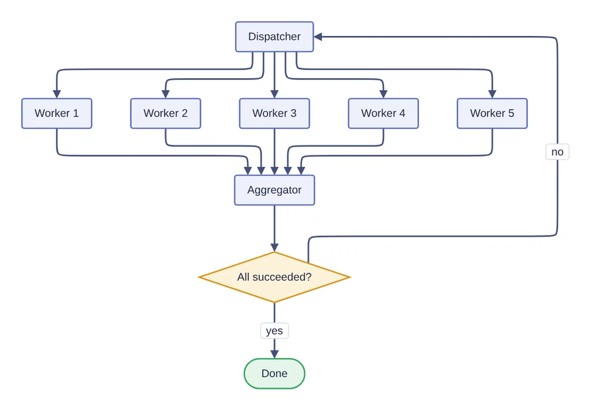
Isu 30 Okt, sekarang
beresLoop-back 'no' lewat interior (2 crossing, gap berlawanan)'no' lewat lane kanan x=711, 39px dari Worker 5, masuk sisi kanan Dispatcher; 0 crossing.
beresgaya edge campurSemua edge siku membulat; kipas keluar dan masuk bersarang rapi.
beresport Worker off-centre dan tidak merataEdge masuk dan keluar tepat di tengah tiap Worker; port Dispatcher jarak 14px, Aggregator 17px.
Masih terlihat di 0.40.2
Label 'no' di tengah lane, jauh dari diamond; mermaid sama.
Flowmaid lebih baik
Spine lurus dari Dispatcher sampai Done, 'no' masuk di sisi kanan Dispatcher (mermaid di samping port kipas), area 38% lebih kecil.
Lihat gambar 0.32 (30 Okt) · penilaian waktu itu: Komposisi seimbang, loop-back menembus kipas
long-labels.mmd
campur
Wrap beres dan diamond kompak; chip label menutupi belokan
mermaid.js 12.2.0
flowmaid 0.40.2
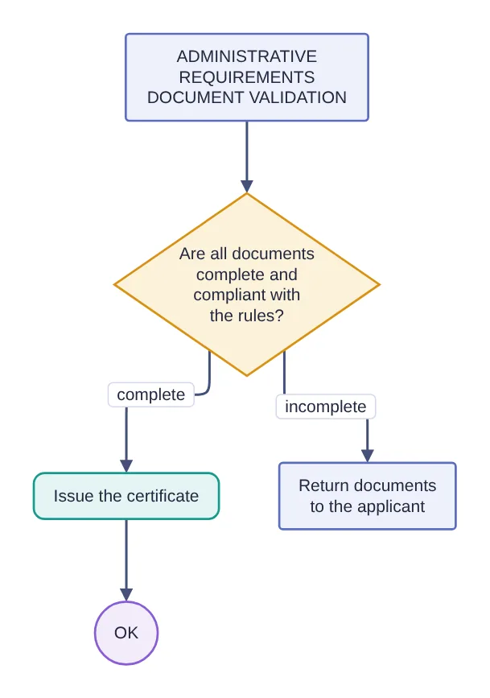
Isu 30 Okt, sekarang
beresNode 442×38, diamond 616×65 (9.5:1), lebar 672 vs 358Label kini di-wrap: node A 201×72 (3 baris), diamond 220×151 (1.45:1). Lebar 406 vs 358, tinggi 578 vs 672.
bereslabel menjepit gap 60pxGap diamond ke node kini 72 sampai 80px, chip punya ruang. Chip duduk di belokan, lihat sisa masalah.
berespanah meleset 43.7pxKedua panah masuk tepat di tengah node (x=104.7 dan 304.5), ujung di border.
Masih terlihat di 0.40.2
Chip 'complete' dan 'incomplete' menutupi belokan; garis 'incomplete' masuk dari atas chip.
Dua chip beda tinggi 10px; mermaid sejajar di segmen lurus.
Node C satu baris, D dua baris; tinggi kedua node tidak sama.
Kanvas 48px lebih lebar dari mermaid (406 vs 358).
Flowmaid lebih baik
Diamond 220×151 (mermaid 234×234), node A tiga baris (mermaid empat), kanvas 94px lebih pendek.
Lihat gambar 0.32 (30 Okt) · penilaian waktu itu: Hampir semua kekalahan karena tidak ada wrap
back-edge.mmd
lebih baik
Back-edge kini siku rapi; chip yes/no masih menutupi belokan
mermaid.js 12.2.0
flowmaid 0.40.2
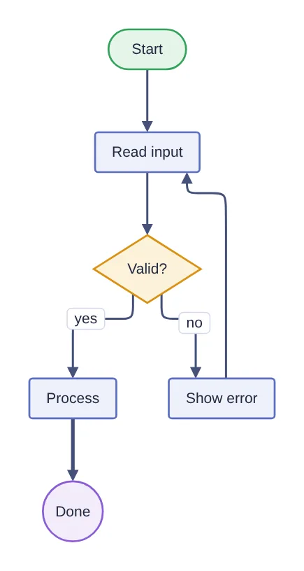
Isu 30 Okt, sekarang
beresArc "telinga", 41% kepala tertutupBack-edge kini siku: naik di x=216, masuk dari bawah Read input; kepala tidak tertutup.
sebagianstart 14px dari 'no'Titik start kini sekitar 45px dari chip 'no', tapi lane naiknya masih 15px dari chip itu.
bereskepala thick 2× dan stubKepala thick D→F seukuran kepala lain (11px); garis lurus sampai border Done.
bereskanvas +37pxLane di dalam kolom Show error; margin kanan 28px sama dengan kiri.
Masih terlihat di 0.40.2
E→B belok tepat di bawah kepala, tanpa stub lurus; mermaid sama.
Lane E→B naik hanya 15px dari chip 'no'.
Chip 'yes' dan 'no' menutupi belokan; garis keluar dari bawah chip.
Flowmaid lebih baik
Spine Start sampai Valid? lurus (mermaid ada jog Z), diamond 102×65 vs 171×171, area 29% lebih kecil.
Lihat gambar 0.32 (30 Okt) · penilaian waktu itu: Spine sempurna, back-edge-nya buruk
wide-labels.mmd
campur
Bow dan kanvas beres; satu chip melayang, beberapa menutupi belokan
mermaid.js 12.2.0
flowmaid 0.40.2
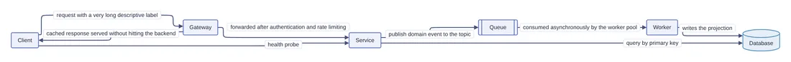
Isu 30 Okt, sekarang
beresBow LR memakai lebar label 337pxReturn 'cached response…' kini siku pendek y 80→101 di bawah Gateway; tidak ada bow.
beresviewBox dari titik kontrolKanvas 1971×156; margin bawah 28px, tidak ada ruang kosong.
beresDatabase melorotDatabase sebaris dengan Client dan Service; C→D lurus horizontal.
sebagianlabel mengambang dengan 3 cara'forwarded…' 16px di atas garisnya dan tidak menyentuh garis. 'writes the projection' menutupi step-nya, garis panjangnya 9px di bawah chip. Chip lain di garisnya.
Masih terlihat di 0.40.2
Chip 'forwarded…' melayang 16px di atas garis B→C, 4.5px di atas Service.
Chip 'cached', 'publish', 'writes', 'health probe' menutupi belokan; garis muncul dari sisi chip.
Chip 'writes the projection' hanya 4px dari Worker.
Garis B→C lewat 7px di atas chip 'health probe'.
Flowmaid lebih baik
Label panjang satu baris (mermaid dua baris), port terpisah per edge (mermaid menumpuk di satu titik), kanvas 1971 vs 2257 lebar.
Lihat gambar 0.32 (30 Okt) · penilaian waktu itu: Bug sumbu label menghasilkan loop 230px
fanout-frames.mmd
lebih baik
Kipas bersih tanpa crossing, teks node tetap terbaca
mermaid.js 12.2.0
flowmaid 0.40.2
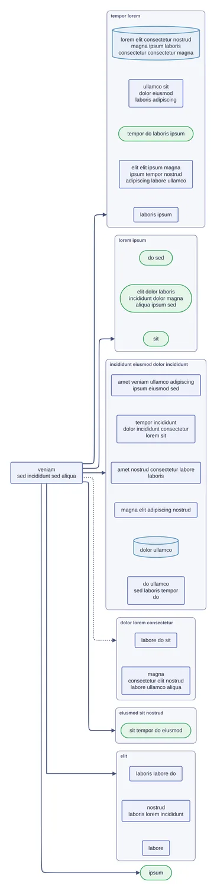
Isu 30 Okt, sekarang
beresg3 dipindah ke kolom kedua (+9% area)Semua frame kini satu kolom; area 11% lebih kecil dari mermaid.
beresdetour g3 terjepitEdge ke g3 kini satu garis lurus mendatar.
beres7 edge kipas campur S dan elbowKetujuh edge kini siku semua, tanpa kurva S.
beres2 crossing yang bisa dihindari0 crossing, dihitung dari SVG.
masih adatepi frame tidak rataTepi kiri frame di x 276 sampai 304; di mermaid semua sejajar.
Masih terlihat di 0.40.2
Tepi kiri frame tidak sejajar, selisih 28 px; mermaid rata kiri
Teks node mengikuti <br/> (cylinder 3 baris, mermaid 7), urutan node di frame sesuai sumber, area 11% lebih kecil.
Lihat gambar 0.32 (30 Okt) · penilaian waktu itu: Node rapi, narrowing salah
dense-td.mmd
campur
Kompak dan siku semua, tapi frame berdampingan merusak alur TB
mermaid.js 12.2.0
flowmaid 0.40.2
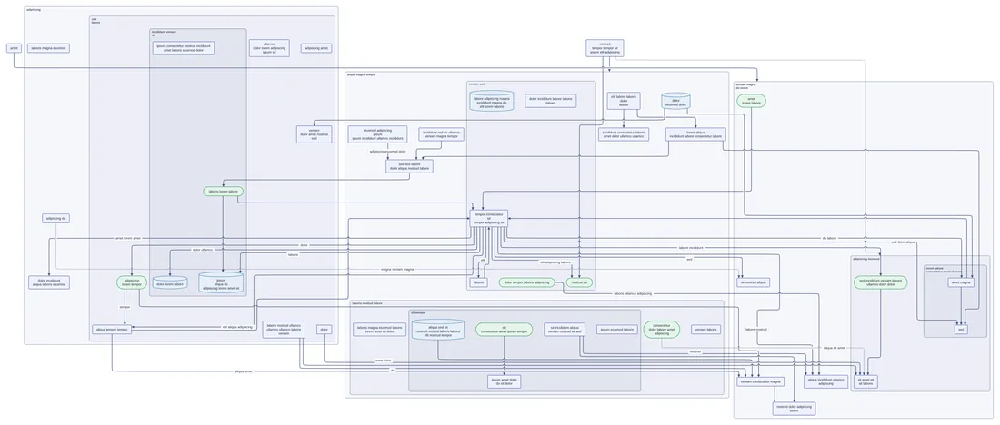
Isu 30 Okt, sekarang
beres3 gaya edgeKe-47 edge kini siku dengan hop; di 0.32 ada 22 edge berkurva atau miring.
beressimpul di hub n1612 edge keluar n16 jadi satu sisir rapi dari sisi bawah.
masih adacluster berdampingang5, g1, g8 masih sejajar mendatar; mermaid menumpuk dari atas ke bawah.
masih ada'amet' di sisi jauh (edge 3316 unit)'amet' tetap di pojok kiri atas; edge ke g8 masih 3267 unit.
masih adanode tanpa edge di rank 0n24, n26, n27, n34 masih di baris teratas bersama 'amet'.
Masih terlihat di 0.40.2
Frame g5, g1, g8 berdampingan; alur atas ke bawah tidak terbaca
'amet' dan node tanpa edge di baris atas; edge 'amet' 3267 unit
Chip 'do' menutup dua garis sejajar, pemiliknya tidak jelas
Putus garis tepat di atas 2 kepala panah (ke g1, n13); kepala tampak lepas
Flowmaid lebih baik
Area 42% dari mermaid, panjang edge total 45%, crossing setara (66 vs 68), ketiga edge dotted tetap dotted (mermaid hanya 1).
Lihat gambar 0.32 (30 Okt) · penilaian waktu itu: Kompak (43% area), routing belum selesai
dense-lr.mmd
campur
Jauh lebih rapi dari 0.32, tapi crossing 4.5× mermaid
mermaid.js 12.2.0
flowmaid 0.40.2
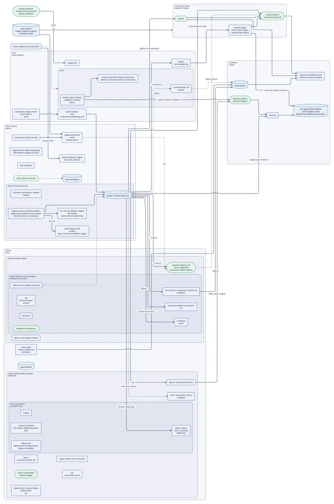
Isu 30 Okt, sekarang
masih adaHub 12 edge keluar dari 3 sisin12 masih memakai 3 sisi: 7 kanan, 3 bawah, 2 atas. Kini tertata rapi.
beresgaya campurKe-42 edge kini siku; di 0.32 ada 21 edge berkurva.
masih adaframe kosongFrame g9 dan g11 masih banyak ruang kosong; isi g9 di kiri, satu node di kanan.
sebagian~61 crossing (mermaid ~15)Kini 45 crossing; 0.32 61, mermaid 10 dengan hitungan yang sama.
sebagian4 label lepasSemua chip menempel di garisnya; 5 di samping garis dan 5 menutup garis lain, termasuk 'magna' dan 'laboris'.
Masih terlihat di 0.40.2
Crossing 45, mermaid 10 dengan hitungan yang sama
Diagram LR tetap portrait; frame g9 dan g11 banyak ruang kosong
Hub n12 keluar dari 3 sisi: 7 kanan, 3 bawah, 2 atas
5 chip menutup garis edge lain; 'magna' dan 'laboris' di samping garisnya
Flowmaid lebih baik
Area 2.4× lebih kecil, panjang edge total separuh mermaid, tanpa detour keliling sampai 6000 unit.
Lihat gambar 0.32 (30 Okt) · penilaian waktu itu: Bagian-bagiannya bagus, jaringan kusut, LR jadi portrait
bench-75.mmd
campur
Siku semua dan kompak, tapi arah LR dan kolom zona hilang
mermaid.js 12.2.0
flowmaid 0.40.2
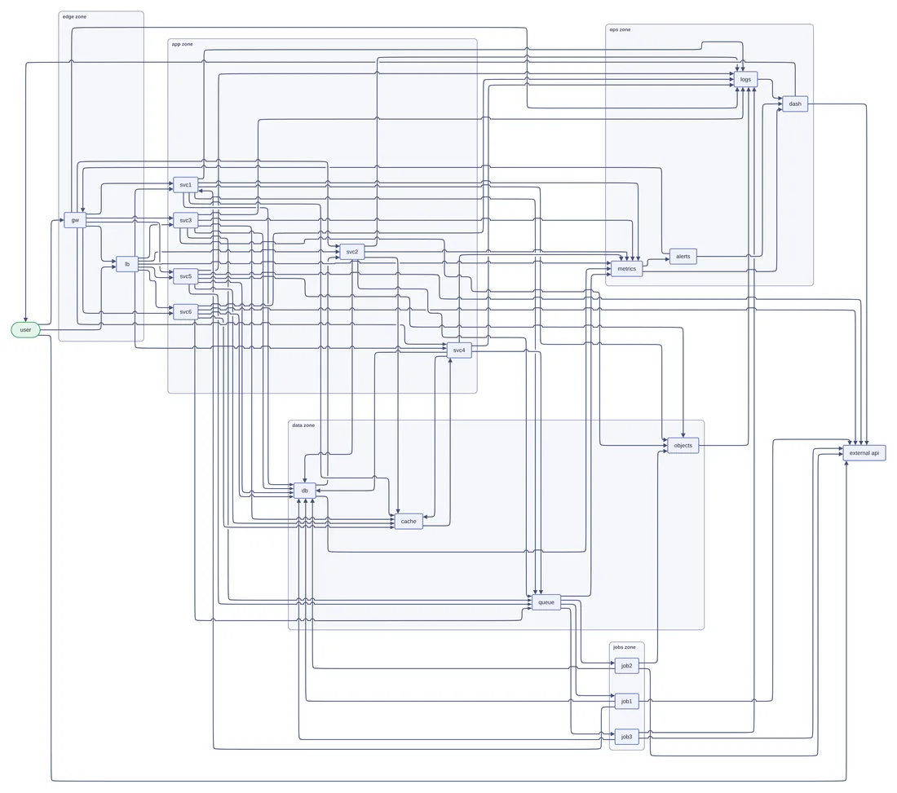
Isu 30 Okt, sekarang
sebagianDFS FAS (33/75 edge ke kanan)Penyebab di kode tidak terlihat. Gejala: 46/75 panah masuk dari kiri (0.32: 35, mermaid 66).
masih adazona tidak berupa kolomdata zone di bawah app zone, jobs di bawah data; mermaid lima kolom.
bereshairpinTidak ada belokan U sempit; cache-svc4 dan db-svc2 kini siku biasa.
sebagian324 gapPutus garis turun dari 324 ke 27; sisa crossing digambar sebagai 205 hop.
sebagian364 crossing (mermaid 222)Kini 294; 0.32 362, mermaid 222 dengan hitungan yang sama.
Masih terlihat di 0.40.2
Crossing 294, mermaid 222 dengan hitungan yang sama
Zona tidak berupa kolom; data dan jobs di bawah app
26 dari 75 panah masuk dari atas atau bawah, 3 dari kanan
Area tengah padat: 205 hop dan 27 putus garis
Flowmaid lebih baik
Kepala panah terpisah per port (mermaid menumpuk jadi blob hitam), aspek 1.13 vs 4.1, panjang edge total 80k vs 106k.
Lihat gambar 0.32 (30 Okt) · penilaian waktu itu: Kompak tapi kusut, arah LR hilang
class.mmd
lebih baik
Isi setara mermaid, lebih pendek, tanpa komentar bocor
mermaid.js 12.2.0
flowmaid 0.40.2
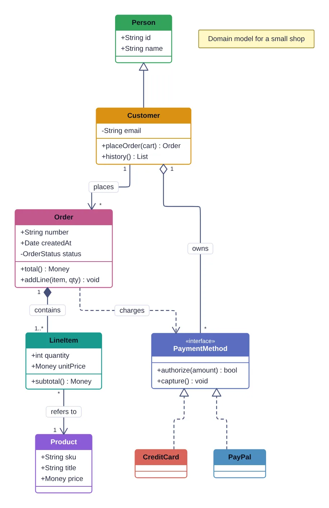
Isu 30 Okt, sekarang
beresHierarki terbalikPerson di atas Customer; PaymentMethod di atas CreditCard dan PayPal.
berespanah 'charges' tertutup dan arc raksasacharges kini garis putus siku pendek dengan kepala V terbuka.
beresnote dan «interface» hilangNote kuning dan «interface» di PaymentMethod tampil.
bereswaypoint diabaikanPenyebab di kode tidak terlihat; di gambar semua edge ikut rute siku, tanpa kurva bebas.
bereskontras headerSemua teks header minimal 4.5:1; terendah 4.58 di Product.
bereskompartemen samarGaris pembagi kini warna border kelas dan jelas terlihat.
Masih terlihat di 0.40.2
Belokan S kecil di edge CreditCard dan PayPal, sama seperti mermaid
Flowmaid lebih baik
Komentar %% tidak bocor ke label 'charges' seperti di mermaid; tinggi 940 vs 1412 dengan susunan yang sama.
Lihat gambar 0.32 (30 Okt) · penilaian waktu itu: Lebih kecil tapi salah dibaca
er.mmd
lebih baik
Lebih ringkas dari mermaid, semua komentar dan kardinalitas tampil
mermaid.js 12.2.0
flowmaid 0.40.2
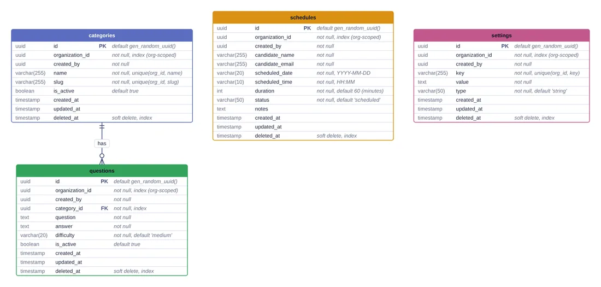
Isu 30 Okt, sekarang
beresChip menutupi lingkaran zeroChip has di y 342–362, lingkaran zero di y 377–387. Jarak 15px, lingkaran terlihat utuh.
beres33 komentar dibuang33 komentar tampil miring abu-abu di kolom keempat semua tabel.
beresLR hard-coded sehingga terbentuk kolom kiricategories di atas questions, schedules dan settings sejajar di kanan. Susunannya mirip mermaid, kanvas 1475×704.
bereskontras header 3/4 gagalHeader hijau/oranye/pink kini teks gelap (6.0/7.3/4.65:1), biru teks putih 4.78:1. Semua lulus 4.5.
Masih terlihat di 0.40.2
Kanan bawah kosong lebar (mermaid sama)
Flowmaid lebih baik
Tanpa grid berat, kolom tipe/nama/kunci/komentar jelas, PK/FK tebal, komentar miring; kanvas 1475×704 vs 1519×1150.
Lihat gambar 0.32 (30 Okt) · penilaian waktu itu: Tabel lebih bersih, kardinalitas dan komentar hilang
state.mmd
lebih baik
Lebih rapi dan benar dari mermaid; note dan LR kini tampil
mermaid.js 12.2.0
flowmaid 0.40.2
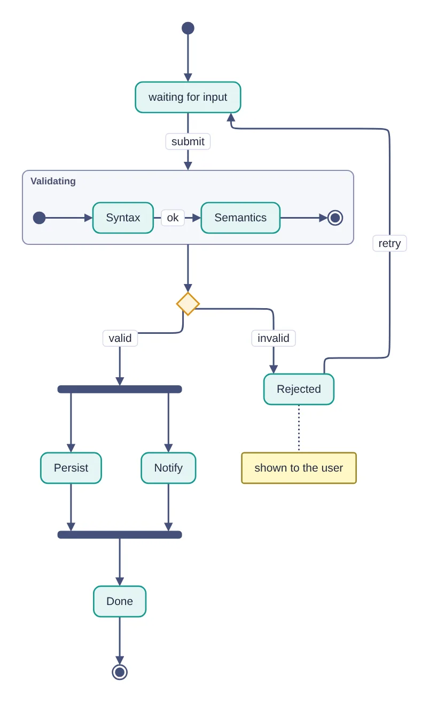
Isu 30 Okt, sekarang
beresNote hilangNote kuning "shown to the user" tampil di bawah Rejected dengan garis titik-titik.
berescomposite LR jadi kolomDi dalam Validating, start → Syntax → Semantics → end kini satu baris.
beresretry arc menyerempet sisi noderetry kini jalur siku di x 486, 45px dari tepi Validating, lalu masuk Idle dari bawah. Tidak menyentuh node lain dan tidak memotong garis.
bereschoice 80×64.6Diamond choice kini 28×28.
berescabang fork berbentuk SPersist dan Notify tersambung garis vertikal lurus dari bar fork ke bar join.
Masih terlihat di 0.40.2
Chip valid duduk tepat di tikungan garis
Cabang valid/invalid keluar dari sisi miring diamond
Note right of Rejected ditaruh di bawah (mermaid juga)
Flowmaid lebih baik
Choice jadi diamond dan fork jadi bar (mermaid 12.2 menggambar keduanya kotak); garis siku rapi; chip label terbaca; kanvas 535×873 vs 649×886.
Lihat gambar 0.32 (30 Okt) · penilaian waktu itu: Elemen lebih bersih, note hilang, LR diabaikan
sequence.mmd
lebih baik
Kini lebih rapi dari mermaid; semua masalah lama hilang
mermaid.js 12.2.0
flowmaid 0.40.2
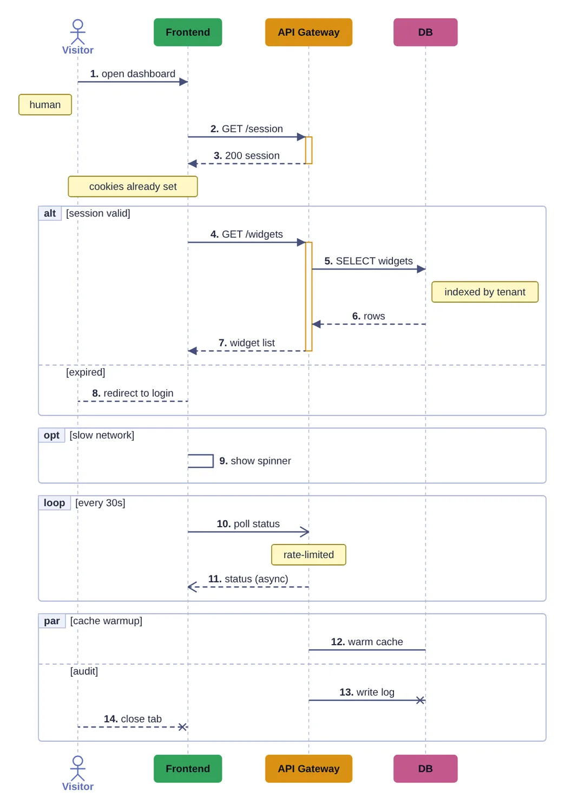
Isu 30 Okt, sekarang
beresPanah tidak memperhitungkan barPesan 2 dan 4 berhenti di tepi kiri bar (x 388.4), pesan 5 mulai dan 6 berakhir di tepi kanan (x 396.4), pesan 3 dan 7 keluar dari tepi bar.
beresactivate telat 14pxBar API mulai di y 308, sama dengan garis pesan 4.
beresnote keluar dari alt"indexed by tenant" di x 548.9–683.9, di dalam frame alt yang sampai x 693.9.
beresactor bukan stick figureVisitor kini stick figure dengan label tebal di bawahnya.
berestanpa footerBaris peserta diulang di bawah, termasuk stick figure Visitor.
Masih terlihat di 0.40.2
Lifeline dan garis frame pucat (kontras 2.0:1), mermaid gelap
Flowmaid lebih baik
Area separuh mermaid (718×1032 vs 1060×1391); frame selebar penuh dan sejajar; nomor tebal inline; label frame tidak ditembus lifeline; komentar %% tidak bocor.
Lihat gambar 0.32 (30 Okt) · penilaian waktu itu: Tidak jelek; masalah di presisi dan header
pie.mmd
lebih baik
Lebih jelas dari mermaid; label kini terpisah dan kontras lulus
mermaid.js 12.2.0
flowmaid 0.40.2
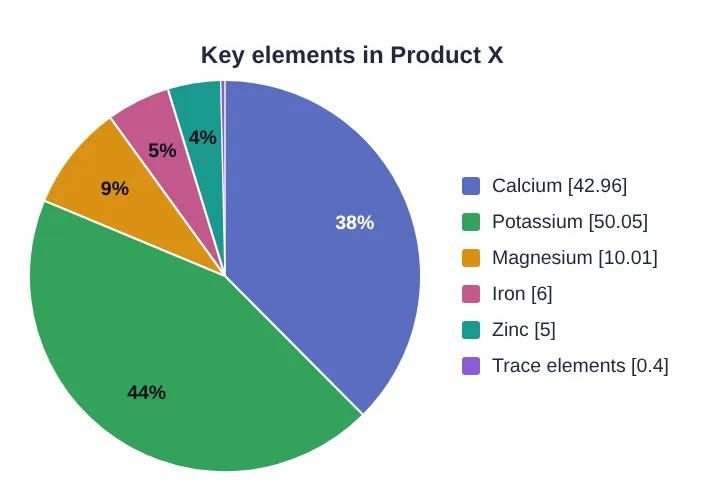
Isu 30 Okt, sekarang
beres"5%4%" menyatu/keluar wedge5% dan 4% berjarak sekitar 8px dan keduanya di dalam wedge. 4% hanya sisa 3–4px ke tepi.
beresteks putih gagal AA di 4/5 sliceHanya 38% yang putih di biru (4.78:1). Label lain teks gelap 4.65–7.34:1.
beresradius 110 kecilRadius kini 130. Pie memakai sekitar 55% lebar kanvas, sama dengan mermaid (r 185 di kanvas 666). Ukuran absolut tetap lebih kecil.
masih adaslice 0.35% hanya garisTrace elements masih garis ungu sekitar 3px di busur atas. Proporsinya memang 0.35%; mermaid tidak menggambarnya sama sekali.
Masih terlihat di 0.40.2
Slice Trace elements hanya garis ungu tipis di atas
Label 4% mepet tepi wedge Zinc (3–4px)
Flowmaid lebih baik
Palet jelas dan beda tiap slice, label tebal lulus AA, pemisah putih, judul tebal di tengah, slice 0.35% tetap terlihat.
Lihat gambar 0.32 (30 Okt) · penilaian waktu itu: Lebih baik dari mermaid
mindmap.mmd
lebih baik
Lebih rapi dan ringkas dari mermaid; bentuk node kini benar
mermaid.js 12.2.0
flowmaid 0.40.2
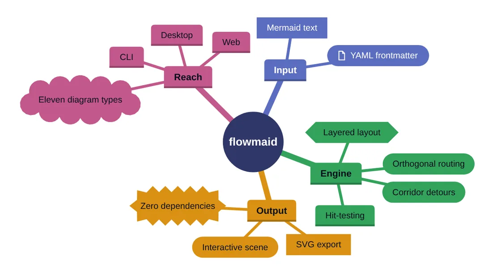
Isu 30 Okt, sekarang
beresInk hanya 9% (ring 172)Ring sudah hilang, cabang rapat ke root. Ink 23.6% (mermaid 30.2%), kanvas 790×443 vs 810×490.
beresroot pucatRoot kini navy #2f3768 dengan teks putih tebal (11.2:1).
berescircle jadi elipsRoot kini lingkaran r 48.8.
berescloud mirip bangEleven diagram types kini awan bergelembung, Zero dependencies bang bergerigi. Mermaid menggambar keduanya mirip awan.
Masih terlihat di 0.40.2
Spoke tidak sama panjang (115–148), celah sudut sampai 150°
Warna teks cabang campur: Input putih, cabang lain gelap (mermaid juga)
Flowmaid lebih baik
Palet tenang dengan kontras cukup, label tidak dipecah dua baris, bang dan cloud dibedakan, ikon file tampil, kanvas sedikit lebih kecil.
Lihat gambar 0.32 (30 Okt) · penilaian waktu itu: Palet lebih tenang, layout ring terlalu jarang
journey.mmd
lebih baik
Lebih ringkas dan jelas, kurva kepuasan kini tampil
mermaid.js 12.2.0
flowmaid 0.40.2
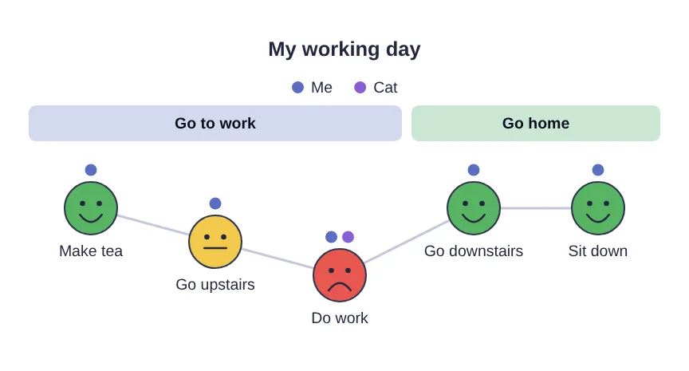
Isu 30 Okt, sekarang
beresSemua wajah di satu baselineWajah kini naik-turun per skor: skor 5 di y=174, skor 3 di y=202, skor 1 di y=230.
bereswarna section = aktor = skorBand kini pastel (#d4d9ef, #cae7d5), Me biru #5b6dc0, Cat ungu #8a5cd6. Tidak ada warna yang sama persis lagi; band Go to work masih tint biru Me.
beresband saling menempelAda celah 8px: Go to work x 24–336, Go home x 344–552.
bereskontras label sectionTeks gelap #0a0e1a di band pastel, kontras 13.7:1 dan 14.6:1. Dulu teks putih di hijau, 3.21:1.
Masih terlihat di 0.40.2
Label task ikut naik-turun dengan wajah, tidak sebaris seperti mermaid
Garis kurva pucat #c2c8dc, kontras 1.67:1 di latar putih
Flowmaid lebih baik
Wajah r=22 berwarna per skor, naik-turun sesuai skor dan dihubungkan garis kurva; 576×310 vs 1300×540, tanpa garis putus-putus panjang.
Lihat gambar 0.32 (30 Okt) · penilaian waktu itu: Lebih bersih, kurva kepuasan hilang
gitgraph.mmd
lebih baik
Kini selengkap mermaid, label horizontal lebih mudah dibaca
mermaid.js 12.2.0
flowmaid 0.40.2
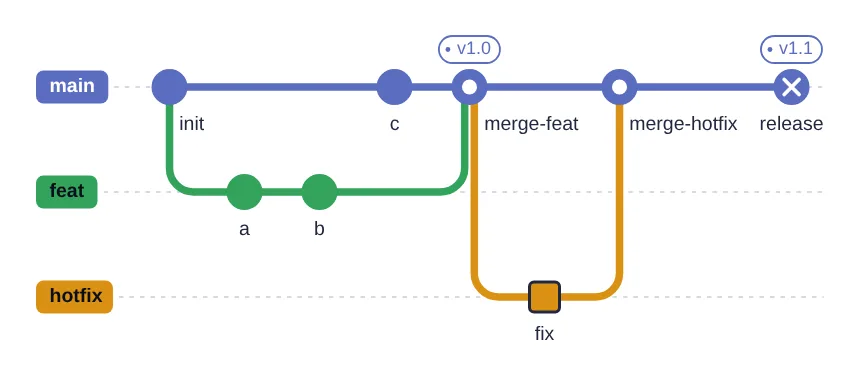
Isu 30 Okt, sekarang
beresSemua edge navy 2pxEdge kini 5px dengan warna branch: main #5b6dc0, feat #33a35c, hotfix #d99114.
bereskurva mencoret label mergeGaris kini siku vertikal; label merge-feat dan merge-hotfix di kanan garis dengan halo putih, jarak sekitar 4px, tidak tercoret.
beresmerge/REVERSE/HIGHLIGHT/tag tidak terbedakanMerge = lingkaran berlubang putih, REVERSE = tanda X, HIGHLIGHT = kotak, tag = pill v1.0 dan v1.1.
berestanpa lane guideAda garis putus-putus per lane dan pill nama branch berwarna di kiri.
Masih terlihat di 0.40.2
Garis feat dan hotfix di bawah merge-feat nyaris menempel (celah 1.4px)
Flowmaid lebih baik
Label commit horizontal 13px (mermaid 10px diputar) dan tidak tertimpa garis; tipe commit, tag dan lane sama lengkap dengan palet lebih tenang.
Lihat gambar 0.32 (30 Okt) · penilaian waktu itu: Topologi benar, tampilan seperti draf
timeline.mmd
lebih baik
Lebih benar dan rapi dari mermaid, semua periode tampil
mermaid.js 12.2.0
flowmaid 0.40.2
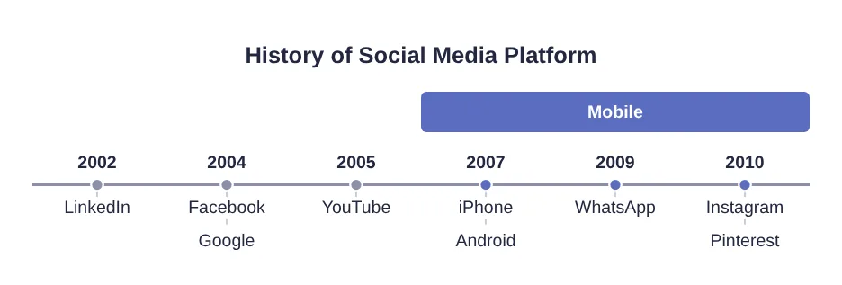
Isu 30 Okt, sekarang
beresGaris dashed mencoret teks eventDashed kini hanya potongan pendek di celah antar baris (y 142.5–146 dan 162.5–171), tidak melewati teks.
beresperiode dan event sama secara tipografiTahun kini tebal, event tetap normal.
beressumbu samarSumbu kini #8a90a8 2px (dulu #c2c8dc 1.5px), kontras 3.16:1.
beresband hijau 3.21:1Band Mobile kini #5b6dc0 dengan teks putih, kontras 4.78:1.
Masih terlihat di 0.40.2
Sumbu tanpa panah arah waktu; mermaid memakai panah
Flowmaid lebih baik
Keenam periode tampil (mermaid membuang 2002, 2004, 2005), tahun tebal dan event tidak tercoret; 624×211 vs 995×643.
Lihat gambar 0.32 (30 Okt) · penilaian waktu itu: Lebih benar dari mermaid
sankey.mmd
lebih baik
0 crossing dan warna terbedakan, lebih rapi dari mermaid
mermaid.js 12.2.0
flowmaid 0.40.2
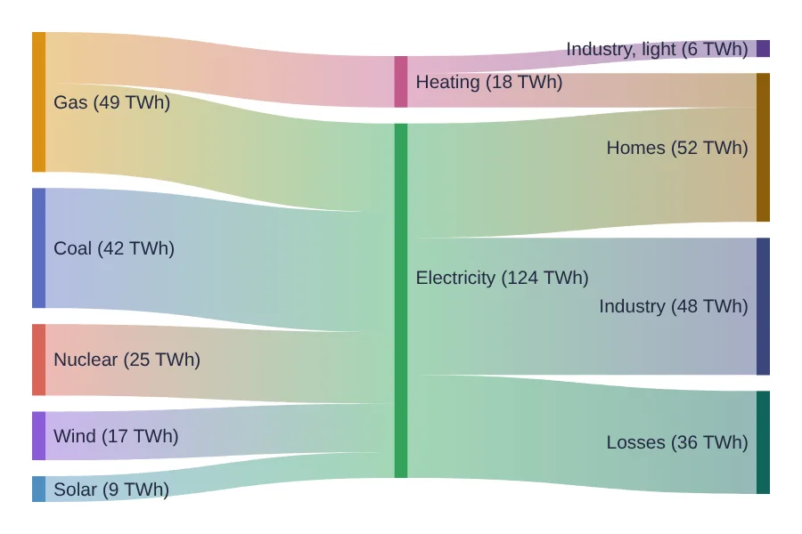
Isu 30 Okt, sekarang
beresPalet 8 warna bentrok (Losses = Electricity)11 node dengan 11 warna berbeda; Electricity #33a35c, Losses #10645c. Kolom kanan memakai versi gelap dari rona kiri.
bereslabel Electricity dan Industry sebaris tanpa pengukuranPenyebab di kode tidak bisa dinilai dari gambar. Di gambar tidak ada tabrakan: Electricity y=207.8, Industry y=229.5, selisih 22px.
beres1 crossing tersisa0 crossing; ujung semua ribbon berurutan monoton di dua kolom (dihitung dari path SVG).
Masih terlihat di 0.40.2
Urutan node di ketiga kolom beda dari file, mis. Gas di atas Coal
Label Industry, light lebih tinggi dari ribbonnya; tepi ribbon lewat di balik teks
Flowmaid lebih baik
0 crossing (mermaid 4) dan 11 node dengan 11 warna berbeda (mermaid: Coal dan Industry, light sama #4e79a7).
Lihat gambar 0.32 (30 Okt) · penilaian waktu itu: Setara atau lebih baik
architecture.mmd
lebih baik
Topologi dan port kini benar, mermaid masih menumpuk node
mermaid.js 12.2.0
flowmaid 0.40.2
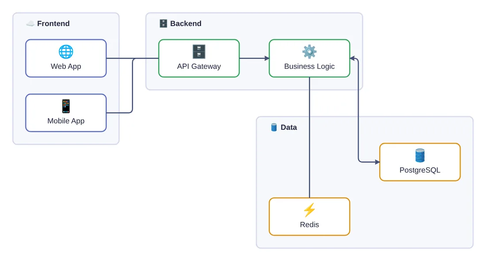
Isu 30 Okt, sekarang
beresEdge web tersembunyiweb→api kini garis lurus x 198→296 di y=109, tidak tertutup node.
beressvc→cache lewat PostgreSQLsvc→cache kini lurus vertikal di x=577, dari bawah Business Logic ke atas Redis.
bereslayout satu baris yang mengabaikan portLayout 2D: Mobile di bawah Web, Redis di bawah Business Logic (B→T), PostgreSQL di kanan (R→L).
sebagianemoji 16pxIkon kini emoji 24px dan lebih terbaca; masih emoji, ikon mermaid 80px.
Masih terlihat di 0.40.2
Ikon masih emoji 24px; ikon mermaid 80px
Garis Business Logic↔PostgreSQL berjalan 8px dari tepi kanan grup Backend
Grup Data 404×246 untuk dua node, banyak ruang kosong
Edge Mobile App menyatu dengan edge Web App sebelum API Gateway
Flowmaid lebih baik
Semua 5 edge terlihat dan port dihormati; tidak ada node bertumpuk (mermaid: "MWobile App") dan tidak ada garis mencoret label (mermaid: Business Logic).
Lihat gambar 0.32 (30 Okt) · penilaian waktu itu: Mermaid sendiri rusak; flowmaid rapi tapi topologinya salah
Roadmap
Tiga sprint di laporan 30 Oktober sudah dikerjakan dalam rilis 0.33.0 sampai 0.40.2. Yang tersisa ada di bagian Berikutnya.
Sudah dirilis 0.33.0 – 0.40.2
Rilis
Isi
0.33.0
ER, sequence, gitGraph, pie, journey, timeline, sankey, mindmap, dan architecture digarap ulang supaya terbaca minimal sebaik mermaid. Router mode advance ditulis ulang.
0.34.0
Flowchart: satu ukuran kepala panah, back-edge di lane orthogonal, subgraph bersarang dan perbaikan kanvas, ruang untuk label dan port, ujung edge di outline asli tiap shape, empat tema mermaid. Class dan state digarap ulang.
0.35.0
Layering: subgraph yang diumpan hub, penyempitan flowchart yang terlalu lebar, gambar tetap stabil saat baris di sumber berpindah.
0.36.0
Lanjutan layering. Wrap teks journey dan timeline, merge di gitGraph, label ER, pie lebih dari enam belas slice.
0.37.0
direction di dalam subgraph atau composite state.
0.38.0
Edge flowchart dan state berjalan orthogonal, dengan sudut membulat.
0.39.0
Garis yang bersilangan saling melompati. Kipas dari hub digambar seperti sisir.
0.40.0
Class: nama bertitik, kipas enam tanpa crossing, self-relation tidak menabrak tetangga. State: drag di dalam composite tidak lagi mengubah ukuran bar fork atau join.
0.40.1
API interaktif: try_route. Drag melewati margin kiri-atas tidak lagi menggeser gambar. Langkah 1 subgraph sebagai blok masuk, masih dimatikan.
0.40.2
API interaktif: drag di diagram ER, class, dan mindmap hanya menggambar ulang yang terhubung ke kotak yang dipindah (route_partial). Mindmap, sequence, pie, journey, timeline, dan sankey bisa di-pick (hit_test). Bagian pertama langkah 2 subgraph sebagai blok masuk, masih dimatikan.
Berikutnya urut
Studi desain untuk blok yang lebih rapat. Beberapa cara merapatkan frame dan meluruskan rantai dibuat berdampingan, lalu dibandingkan gambar per gambar dengan mermaid 12.2.0 sebelum satu dipilih.
Langkah 2 (bagian kedua) dan langkah 3 masuk ke dev, tetap dimatikan, setelah lolos review.
Langkah 4, lalu layout blok menjadi default dalam satu rilis.
Sedang dipertimbangkan: merilis mode blok lebih awal sebagai opsi yang dinyalakan sendiri, dengan layout sekarang tetap jadi default.
Belum dijadwalkan
Class dengan tiga self-relation atau lebih pada satu kelas.
Tiga detail kecil pada subgraph dengan direction sendiri, dicek ulang setelah layout blok masuk.
Graf besar: graf padat seribu node masih butuh beberapa detik.
Hook id dan class di SVG, pemecahan fungsi layout yang panjang, math di label.
Yang jangan sampai hilang
Hal-hal berikut sudah lebih baik di flowmaid, jadi jangan dikorbankan demi meniru mermaid.
Chip label putih yang berpadding. Label mermaid berupa blok abu-abu dan sering ditembus garis.
Judul cluster tidak pernah tertabrak edge. Mermaid mencoret "Platform" dan "Event bus".
Diamond kompak untuk label pendek (102×65, sementara mermaid 171×171).
SVG portabel: pakai <text> tanpa foreignObject, ukurannya 5–10× lebih kecil, dan punya aria.
Menghormati <br/> dan tidak menghasilkan wrap yatim. Auto-wrap cukup untuk label tanpa break eksplisit.
Self-loop yang jelas. Self-loop di mermaid rusak di advanced dan stress.
Semantik dotted dan thick tetap terjaga. Mermaid mengubah 2 edge dotted jadi solid di dense-td.
<<choice>>/<<fork>> di state digambar benar. Mermaid 12.2 menggambarnya sebagai kotak.
Pie, journey, timeline, dan sankey sudah setara atau lebih baik.
Palet semantik per-shape. Tawarkan tema netral sebagai opsi, bukan pengganti.
Metode
Sumber, konfigurasi mermaid, dan render mermaid sama dengan laporan 30 Oktober: examples/*.mmd dan tests/fixtures/quality/*.mmd, mermaid di Chromium headless dengan konfigurasi default. Gambar flowmaid 0.40.2 dibuat dengan CLI release build dari commit c202cfc. Setiap diagram ditinjau satu agent terhadap gambar mermaid, gambar 0.32, dan gambar 0.40.2, termasuk status setiap isu lama. Agent kedua lalu mencoba membantah setiap klaim dengan melihat gambar dan SVG-nya sendiri, dan mengoreksi 29 klaim. Status lima alasan besar dan sepuluh bug dicek di CHANGELOG dan di gambar hari ini. Gambar mode blok berasal dari branch kerja (b82d584) dan belum dirilis.